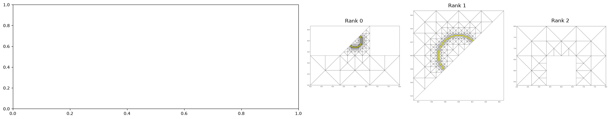
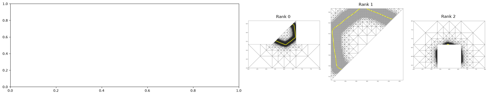
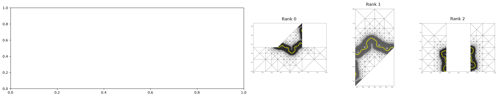
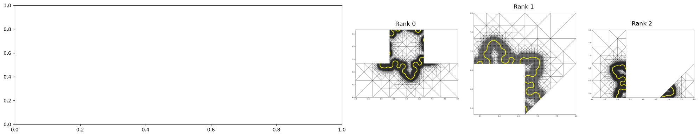
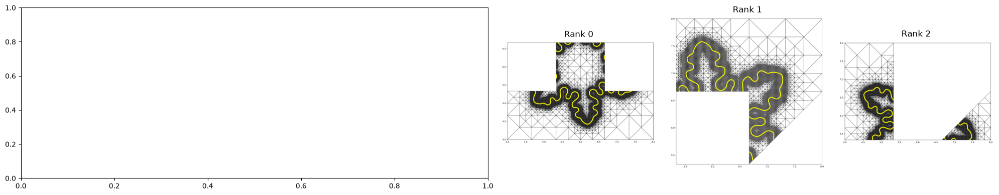
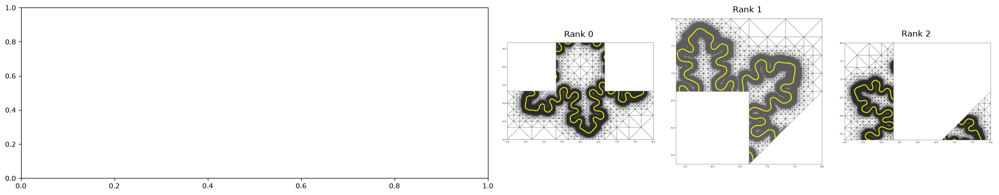
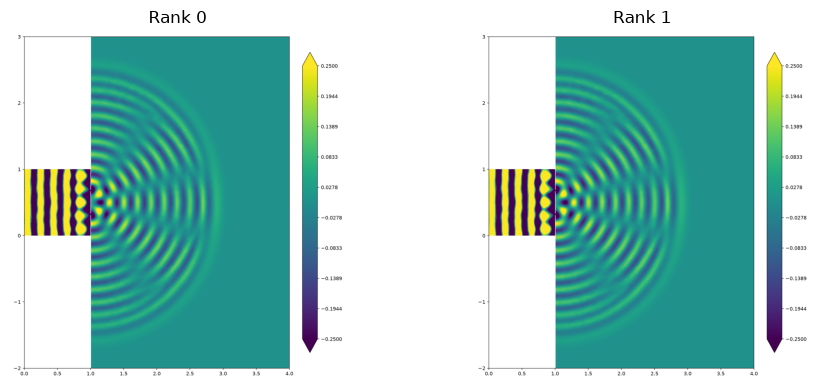

Note
This document is part of the dune-fem tutorialJupyter notebook (_nb.ipynb) or as Python script (.py)Distributed Parallel Simulations
We will run two of the examples already described in parallel to demonstrate how little to no change is required to do so.
[1]:
import subprocess
import sys
import matplotlib.pyplot as plt
import matplotlib.image as mpimg
try:
import mpi4py
except ImportError:
print("Example requires an `mpi` installation - skipping")
sys.exit(0)
oversub = ["--map-by", ":OVERSUBSCRIBE"] # allow oversubscription for this simple test
Parallel Crystal Growth Model
We now run the crystal growth phase field example:
[2]:
nprocs = 3
print("==========================================")
print(["mpiexec", *oversub, "-n", str(nprocs), sys.executable, "crystal.py"],flush=True)
print("==========================================")
subprocess.run(
["mpiexec", *oversub, "-n", str(nprocs), sys.executable, "crystal.py"],
check=True,
)
==========================================
['mpiexec', '--map-by', ':OVERSUBSCRIBE', '-n', '3', '/home/runner/work/dune-testpypi/dune-testpypi/dune-env/bin/python3', 'crystal.py']
==========================================
112 78 58 51 51 51 51 51
88 60 84 124 216 300 432 592
136 102 114 149 241 325 457 617
[2]:
CompletedProcess(args=['mpiexec', '--map-by', ':OVERSUBSCRIBE', '-n', '3', '/home/runner/work/dune-testpypi/dune-testpypi/dune-env/bin/python3', 'crystal.py'], returncode=0)
Each process produced a plot containing only part of the grid at five different point in the simulation. Note how the call fem.gridAdapt(marker, u_h) within the time loop does not only refine and coarsen the grid but also leads to occasional repartitioning of the grid to balance the load between the three processors. We first use pvpython if available to generate figures showing the combined grid and solution with the partitioning. Then we show the individual domains - those figures were
generated during the above call to crystal.py:
[3]:
print("============================================")
try:
for i in range(6):
print(f"pvpython call {i}")
subprocess.run(['pvpython','pvcrystal.py', str(nprocs), str(i)],
stdout=subprocess.DEVNULL,
stderr=subprocess.DEVNULL,
check=True
)
figGenerated = True
except: # probably no pvpython available
figGenerated = False
print("============================================")
for i in range(6):
fig, axes = plt.subplots(1, nprocs+1, figsize=(5*(nprocs+1), 4),
gridspec_kw={"width_ratios": [3] + [1] * nprocs})
for rank, ax in enumerate(axes[1:]):
image = mpimg.imread(f"crystal{rank}{nprocs}_{i}.png")
ax.imshow(image)
ax.set_title(f"Rank {rank}")
ax.axis("off")
if figGenerated:
image = mpimg.imread(f"crystal{nprocs}_{i}.png")
axes[0].imshow(image)
axes[0].set_title(f"Full")
axes[0].axis("off")
fig.tight_layout()
============================================
pvpython call 0
============================================






Parallel Wave Equation
We now run the double slit domain wave example on two processes with a distributed grid. Here we need to make a slight adjustment to one part of the original code which is detailed below. Note that this change could have been included in the serial version without any issue. To keep the explanation simple there we decided to include the change in the separate script.
[4]:
nprocs = 2
print("==========================================")
print(["mpiexec", *oversub, "-n", str(nprocs), sys.executable, "wave_mpi.py"],flush=True)
print("==========================================")
subprocess.run(
["mpiexec", *oversub, "-n", str(nprocs), sys.executable, "wave_mpi.py"],
check=True,
)
==========================================
['mpiexec', '--map-by', ':OVERSUBSCRIBE', '-n', '2', '/home/runner/work/dune-testpypi/dune-testpypi/dune-env/bin/python3', 'wave_mpi.py']
==========================================
[4]:
CompletedProcess(args=['mpiexec', '--map-by', ':OVERSUBSCRIBE', '-n', '2', '/home/runner/work/dune-testpypi/dune-testpypi/dune-env/bin/python3', 'wave_mpi.py'], returncode=0)
Again each process produced a plot containing its part of the grid
[5]:
fig, axes = plt.subplots(1, nprocs, figsize=(5*nprocs, 4))
for rank, ax in enumerate(axes):
image = mpimg.imread(f"wave_mpi{rank}.png")
ax.imshow(image)
ax.set_title(f"Rank {rank}")
ax.axis("off")
fig.tight_layout()

Here is the code being run - note how almost no additional code is needed compared to the serial version with the exception of the setup for the inverse lumped mass matrix
[6]:
from IPython.display import Code, display
display(Code(filename="wave_mpi.py", language="python"))
from matplotlib import pyplot as plt
import numpy as np
from scipy.sparse import dia_matrix
import dune.common
import dune.fem as fem
from dune.grid import reader
from dune.alugrid import aluConformGrid as leafGridView
from dune.fem.space import lagrange as solutionSpace
from ufl import TrialFunction, TestFunction, SpatialCoordinate, grad, dot, dx
from dune.ufl import Constant, BoxDirichletBC, DirichletBC
from dune.fem.function import levelFunction, partitionFunction
from dune.fem.scheme import galerkin
T = 3
dt = 0.005
t = 0
domain = (reader.meshio, "wave_tank.msh")
gridView = leafGridView( domain, dimgrid=2 )
gridView.hierarchicalGrid.loadBalance()
V = solutionSpace(gridView, order=1, storage="numpy")
u = TrialFunction(V)
v = TestFunction(V)
x = SpatialCoordinate(V)
p = V.interpolate(0,name="p")
phi = V.interpolate(0,name="phi")
p_in = Constant(0.0, name="g")
bc = DirichletBC(V, p_in, 1)
op = galerkin([dot(grad(u),grad(v))*dx==0,bc])
S = op.linear()
lapPhi = V.interpolate(1,name="e")
lapPhiVec = lapPhi.as_numpy
lumping = galerkin(u*v*dx(metadata={"quadrature_rule":"lumped"})==0)
Mlumped = lumping.linear()
# 'Mlumped' is a diagonal matrix from which we need the inverse. To make
# this as efficient as possible we store the inverse in a scipy diagonal
# matrix. An issue is that the linear operator 'Mlumped' is additively
# distributed, so we first need to sum up diagonal entries shared over
# multiple processors. The linear operator itself does not provide a
# suitable communication method but we can interpret the diagonal entries
# as a discrete function and use the communication method there:
lumped = V.function(name="lump", dofVector=Mlumped.as_numpy.diagonal())
lumped.communicate()
N = lumped.size
Minv = dia_matrix(([dt/lumped.as_numpy],[0]),shape=(N,N) )
saveInterval = T/20
nextSaveTime = saveInterval
# vtk = gridView.sequencedVTK("wave", pointdata=[p,phi],
# celldata=[levelFunction(gridView), partitionFunction(gridView)])
# vtk()
tmp = phi.copy()
while t <= T:
phi.axpy(-dt/2, p)
S(phi,tmp)
p.as_numpy[:] += Minv*tmp.as_numpy[:]
p_in.value = np.sin(2*np.pi*5*t)
op.setConstraints(p)
phi.axpy(-dt/2, p)
if t > nextSaveTime-dt/4:
# vtk()
nextSaveTime += saveInterval
# check for instabilities
assert np.max(abs(p.as_numpy[:])) < 3
# update time
t += dt
# vtk()
fig = plt.figure(figsize=(10,10))
p.plot(gridLines=None, clim=[-0.25,0.25], figure=fig)
fig.savefig(f"wave_mpi{dune.common.comm.rank}.png", dpi=150, bbox_inches="tight")
Note
This document is part of the dune-fem tutorialJupyter notebook (.ipynb) or as Python script (.py)